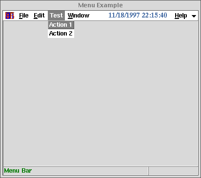

<!DOCTYPE HTML PUBLIC "-//W3C//DTD HTML 4.01 Transitional//EN">
<HTML lang="ja-JP">
<HEAD>
<META HTTP-EQUIV="Content-Type" CONTENT="text/html; charset=ISO-2022-JP">
<TITLE>KBFrame $B%a%K%e!<$N:n@.(B</TITLE>
</HEAD>

<BODY BGCOLOR="White" TEXT="Black" LINK="Blue" VLINK="Teal" ALINK="Red">

<A NAME="top" HREF="index-ja.html">$BL\<!(B</A>
<A HREF=about-ja.html>About... MessageBox</A>
<A HREF=progbar-ja.html>Progress Bar</A>

<HR><DIV ALIGN="CENTER"><H2>$B%a%K%e!<$N:n@.(B</H2></DIV><HR>

<P>$B%a%K%e!<%P!<$K?7$7$/(BMenuButton[]$B$r:n$k$K$O!"(B</P>

<PRE><CODE>
FFS;
w = KBMainFrame["MenuEx", f, Title-&gt;"Menu Example"];
mb = <A HREF="manual.html#KBFAddMenuButton">KBFAddMenuButton</A>[w, Text-&gt;"Test"];
m = Menu[mb,Add-&gt;{
      Button[Text-&gt;"Action 1", Command:&gt;Print["1"]],
      Button[Text-&gt;"Action 2", Command:&gt;Print["2"]]}];
TkWait[];
</CODE></PRE>

<P>$B$N$h$&$K$7$^$9!#(BKBFAddMenuButton$B$N=q<0$O!"?F$H$7$F(BKBFrame$B$r;XDj$9$k(B
$B0J30$ODL>o$N(BMenuButton[]$B$HF1$8$G$9!#(B
$B0lC6(BMenuButton[]$B$,=PMh$k$H!"$=$l$KIU?o$9$k(BMenu[]$B$OIaDL$K:n$l$^$9!#(B
$B?7$7$$(BMenuButton[]$B$N0LCV$O!"(BEdit$B%a%K%e!<$H(BWindow$B%a%K%e!<$N4V$G$9!#(B</P>

<P></P>

<P><A HREF="#top">top</A></P>

<HR>
<ADDRESS>$B$3$N%Z!<%8$K4X$9$k8f0U8+!&<ALd$O(B
<A HREF="mailto:samo.stanic@kek.jp">Samo Stanic</A>
$B$^$G(B.</ADDRESS>
</BODY>
</HTML>
